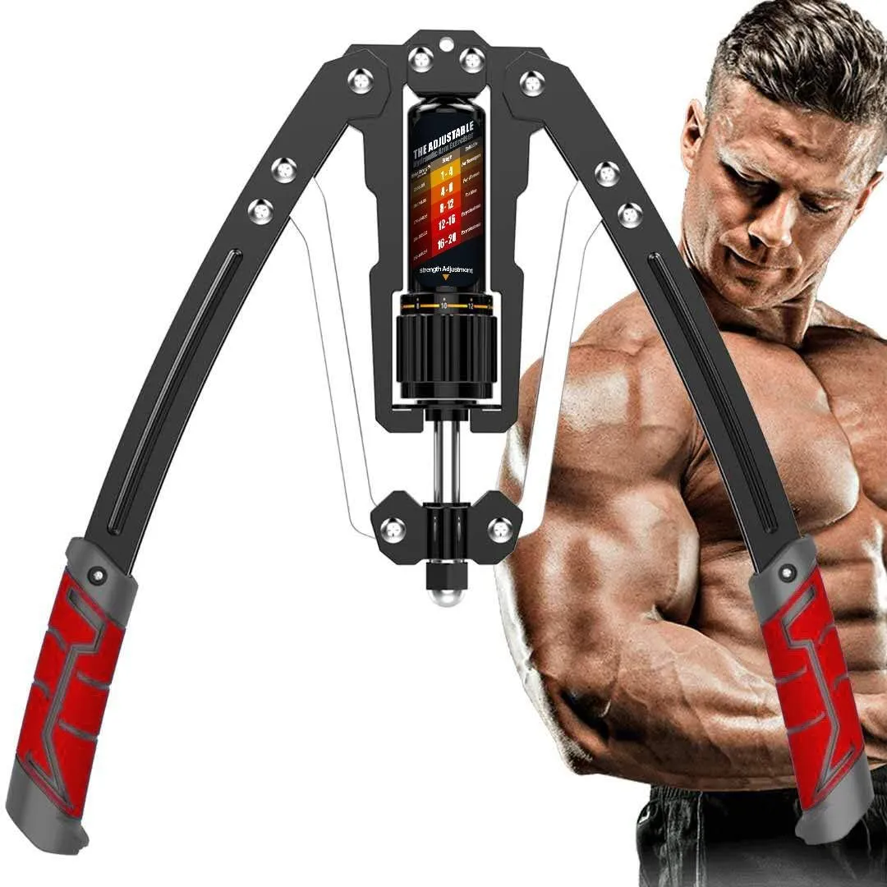
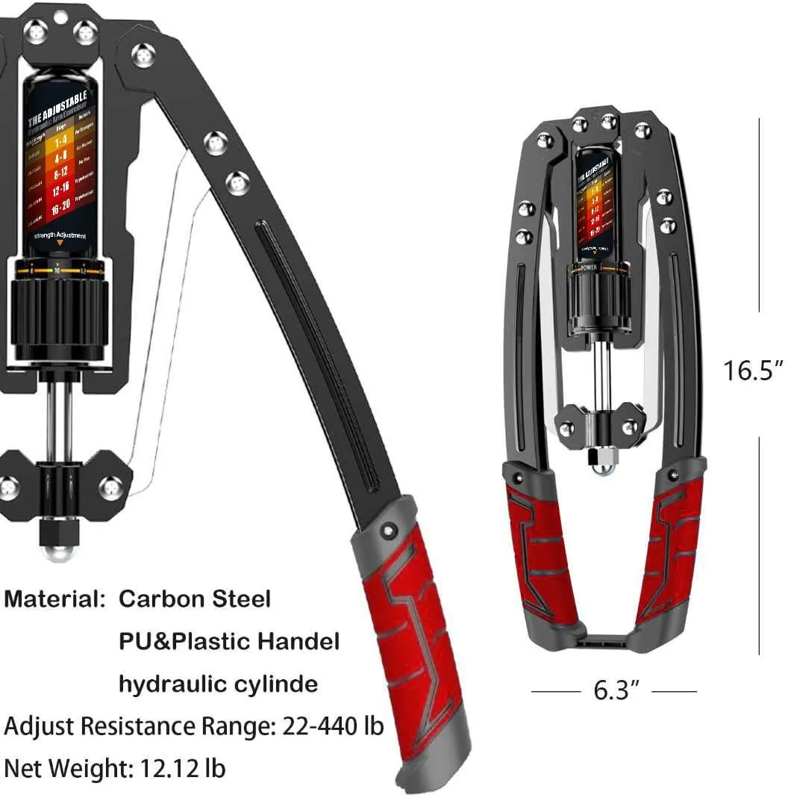
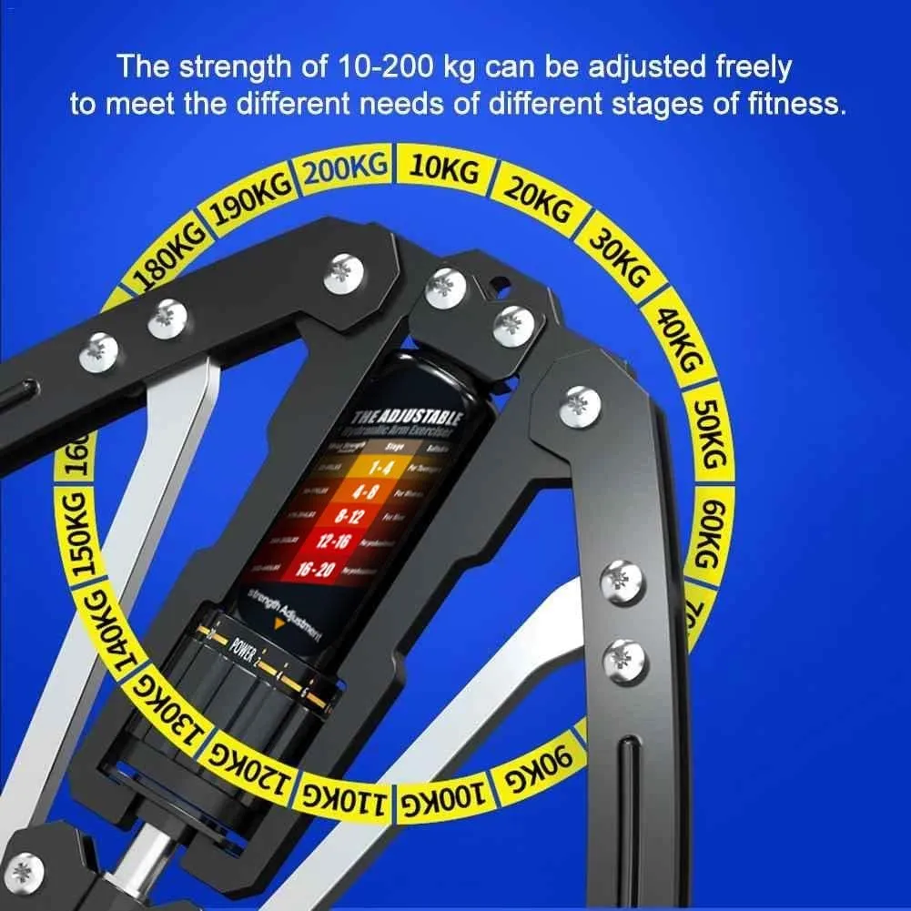
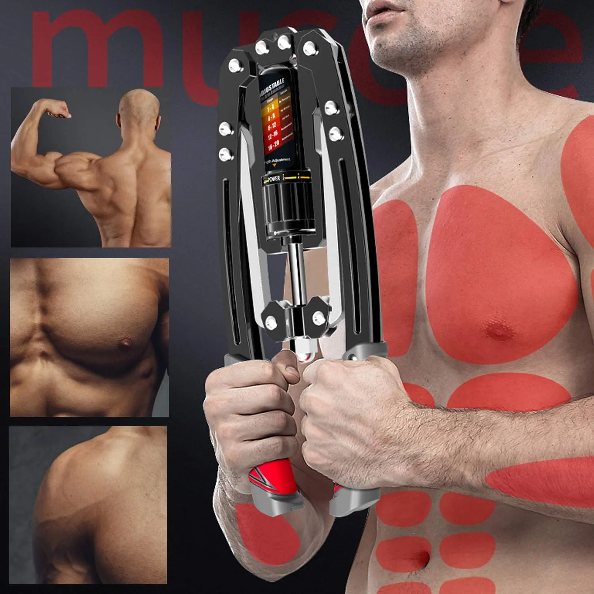

Why Home Strength Training Usually Fails
Most people do not fail because they hate fitness. They fail because the setup is too annoying: too much equipment, too much space, too much time, and too many excuses.
That is why compact resistance tools can make sense. They remove the biggest problem first: getting started. A small tool that is easy to grab can be more useful than a large machine you avoid using.
The EAST MOUNT Twister Arm Exerciser is built for upper-body resistance work in a compact format. It targets the kind of training many people want at home: chest, shoulders, arms, grip, and controlled pressing strength.
Why this product fits the problem
- Compact enough for small home workout spaces.
- Designed for chest, shoulder, arm, and grip training.
- Adjustable resistance range shown as 22–440 lb.
- Hydraulic cylinder design with controlled resistance feel.
Why a compact arm exerciser can work better than bulky gear
Big workout setups look impressive, but they often become furniture. The easier a tool is to pick up, adjust, and store, the more likely it is to stay in your routine.
This type of exerciser is not trying to replace a full gym. It is best for people who want a direct upper-body strength tool that can be used at home without rearranging the room.
Use a resistance level that feels controlled instead of forcing heavy reps too early.
Short regular sessions beat rare intense workouts that you cannot maintain.
Increase resistance only when your form and control feel stable.
The simple home training approach
Use this kind of tool as a focused strength accessory. It is strongest when you treat it like a repeatable routine: controlled reps, steady breathing, and a resistance setting you can manage safely.
For beginners, the goal is not to max out the resistance. The goal is to build consistency first. For stronger users, the adjustable range makes it easier to keep the tool useful as strength improves.
Product details that matter

EAST MOUNT Twister Arm Exerciser
An adjustable hydraulic arm exerciser built for compact upper-body training at home.
Best fit: shoppers who want a compact chest, shoulder, arm, and grip training tool without a full gym setup.
View Product on Amazon
Compact size with heavy-duty materials
The product image highlights carbon steel, PU and plastic handles, a hydraulic cylinder, 16.5-inch height, and 6.3-inch folded width.
Best fit: buyers who want a strength tool that feels more serious than light plastic fitness gadgets.

Resistance range for different stages
The resistance graphic shows adjustable strength levels, making the tool more flexible than a fixed-resistance trainer.
Best fit: users who want one tool that can grow with their training instead of being outgrown quickly.

Chest, shoulders, arms, and grip
The product visuals focus on upper-body training zones, which makes the tool a better fit for targeted strength work than general cardio equipment.
Best fit: people who want a simple tool for upper-body resistance training at home.
FAQ
Is this arm exerciser a replacement for the gym?
No. It is better viewed as a compact home strength tool, not a full gym replacement. It can help with focused upper-body resistance training.
Who is this product best for?
It is best for people who want chest, arm, shoulder, and grip training at home without bulky equipment.
Should beginners use the highest resistance?
No. Beginners should start with a controllable resistance level and build form, consistency, and confidence before increasing intensity.
Small setup. Stronger routine.
If getting to the gym keeps killing your consistency, a compact upper-body tool can make training easier to start and easier to repeat.